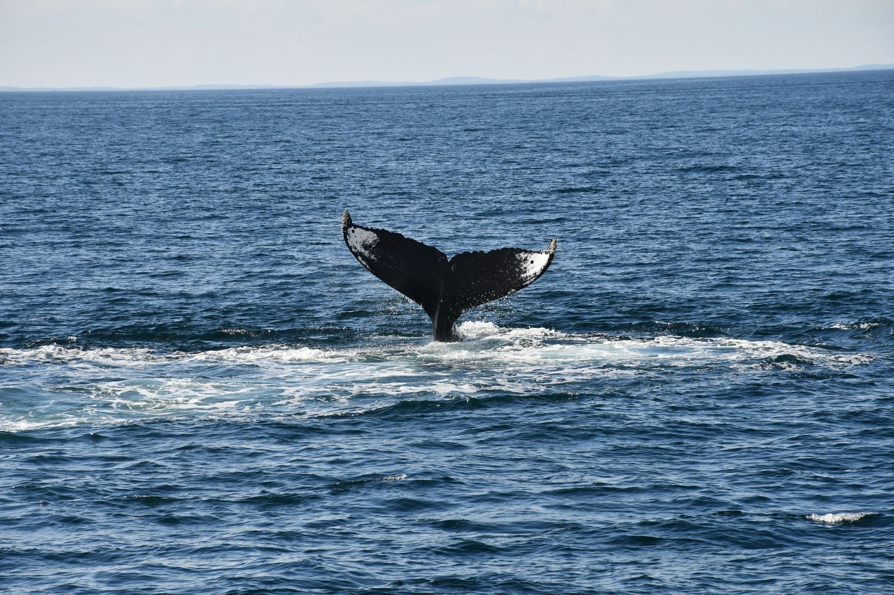

Passive acoustic monitoring · North Atlantic
The ocean is loud. The work is knowing which loud matters.
I design, deploy and analyse hydrophone arrays for offshore energy, ports and marine research — and I print the detection range with the weather, the shipping and the season still attached to it.
41
PAM programmes delivered since 2013
2,300+
Recorder-days deployed & analysed
6
Stop-work calls made — and stood behind in the log
0
Reports that called silence an absence of animals
The register · What can be booked
Services, with their terms showing
Every engagement is quoted from the printed rate card in the fee sheet below. What moves the price is survey duration and analysis depth — never the conclusion the data supports.
Baseline & consenting surveysSeasonal deployments that establish what vocalises at a site, how far away it can honestly be heard, and what the regulator will ask next.
Offshore wind & tidal developers · consenting teams
BookingPer programme · autumn window open
Real-time construction monitoringLive array watch during pile-driving and blasting, with an exclusion zone, soft-start support, and stop-work authority agreed in writing before mobilisation.
Port authorities · offshore construction
BookingPer campaign · one spring slot
Long-term moorings & datasetsArchival recorders serviced on a six-month cycle, analysed to a printed standard, delivered as a report plus an open, documented dataset.
Research institutes · naval environmental programmes
BookingPer season · 3-year terms usual
Propagation & detection-range studiesDesktop modelling checked against in-situ measurements, so the range in your assessment is the range the water actually gives you.
Developers · environmental consultancies
BookingFixed study · 4–6 weeks
Detector validation & analysis auditIndependent re-analysis of existing recordings: detector settings checked against hand-verified subsamples, false-positive rates printed, conclusions re-graded.
Research groups · regulators
WaitlistPer dataset · next opening winter
Instrument 01 · The propagation sheet
How far does a call actually carry?
This is the arithmetic that opens every study this practice writes. Pick a source, a frequency and a sea condition, then step the range — the sheet shows every line of the working, and reads the answer against the noise. It is a planning model with spherical spreading; a real survey measures the real water column, which is the point of Case file 01.
Propagation calculator
TL = 20·log₁₀(R) + α·R — RL = SL − TLSource — stated example figures
Frequency — sets absorption α
Range — source to hydrophone
Ambient noise — the sea it must beat
Teaching pairing. Absorption belongs to the water and the frequency, not to the animal — this source does not call at the frequency you have selected. The arithmetic is still the arithmetic, and it is how a high-frequency click dies in a kilometre while a low pulse crosses a basin.
The working — every line shown
All levels in dB re 1 µPa. Ambient figures are stated planning bands in the source's own band, not measurements of your site — your site gets measured, not assumed.
The printed tables
The calculator reads these — they cannot disagree| Source | Source level | Band | Stated basis |
|---|---|---|---|
| Fin whale, 20 Hz pulse | 186 dB re 1 µPa @ 1 m | Low, ~20 Hz | Mid-range of published estimates; individual animals vary by several dB |
| Humpback, song unit | 175 dB re 1 µPa @ 1 m | Representative unit, ~1 kHz | Song units span a wide band and a wide level range; this is a planning figure |
| Sperm whale, usual click | 210 dB re 1 µPa @ 1 m | Centroid ~10 kHz | On-axis stated figure; clicks are directional — off-axis arrivals are far weaker |
| Frequency | α (dB/km) | What it means in practice |
|---|---|---|
| ≤ 100 Hz | 0.002 | Absorption is nothing; spreading and noise set the range |
| 1 kHz | 0.06 | Still small — 0.6 dB over 10 km |
| 10 kHz | 1.0 | 10 dB over 10 km: the term starts to matter |
| 50 kHz | 17 | 170 dB over 10 km: ultrasound is a local sense |
| Condition | Level | When it applies |
|---|---|---|
| Quiet coast | 85 dB | Light airs, no shipping lane, away from surf |
| Shipping lane | 105 dB | Traffic most hours — the honest default near ports and lanes |
| Storm + traffic | 115 dB | Winter worst weeks; the condition consent conditions forget |
Instrument 02 · The listening bench
Hear the two shapes — synthesised, labelled, honest
Analysts are not hired for their ears; they are hired for knowing what a detector will do with a shape. These two contours are synthesised in your browser to teach exactly that. They are not recordings, no animal was involved, and each one stops itself.
Listening bench
Sound starts only when you press · Fixed low levelSILENT. The bench has not been started. Nothing on this page makes a sound until you press a contour.
Press a contour and watch its trace light up in Fig. 2 while it plays. If the downsweep sounds like almost nothing, that is your loudspeaker reaching its limit at 40 Hz — not the signal failing. Analysts work from the picture for exactly this reason.
Hearing safety: contours are synthesised at a fixed low level in your browser and stop themselves within two seconds. Keep your device volume moderate; there are no sudden loud sounds on this bench.

The fee sheet · Pricing shape, published
What a programme costs, before you ask
Build the shape of your programme and read the planning figure. It is an estimator, not a quote — the fixed number comes after a site call, and it is built from these same printed rates.
Programme estimator
Rates read from the printed card — Table 4Survey design & propagation modelling£950 / day
£2,850
Deployment & recovery days£2,400 / day · two-person team
£9,600
Analysis & reporting days£850 / day
£8,500
Autonomous recorders on hire£140 / unit / week, calibrated
£3,360
Hire periodApplies to the recorder line
6 × 4 × £140
The default shape is Case file 01's first season: 3 design days, 4 deployment days, 10 analysis days, 6 recorders for 4 weeks. Real programmes run longer — a two-season baseline is typically three to four times this figure, and the estimator will show you that honestly if you step it there.
| Line | Rate | Notes |
|---|---|---|
| Survey design & propagation modelling | £950 / day | Includes the detection-range annex |
| Deployment & recovery | £2,400 / day | Two-person team; harbour workboat or client's vessel |
| Analysis & reporting | £850 / day | Detector validation on hand-checked subsamples included |
| Autonomous recorder hire | £140 / unit / week | Calibrated before and after; health-check log travels with the data |
What moves the price: survey duration and analysis depth first — a second season roughly doubles deployment and analysis, and no honest estimator should hide that. Vessel time beyond a harbour workboat is the client's cost or a shared charter, stated in the quote, never buried in a day rate.
What never moves the price: the conclusion. A study that ends at "do not build it there" costs the same days as one that ends at "proceed" — a rule written into every engagement letter this practice signs.
“When the array called the stop, Inês's log was the document our board, our contractor and the regulator all read — the same numbers, the same times, no adjectives. The three and a half hours cost us less than the argument would have.”
Raise a watch
Have a site that needs listening to?
Bring the site, the species of concern and the regulator's question. The first reply will tell you what can honestly be heard there — before any rate card comes out.